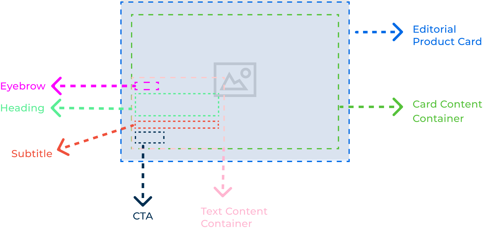
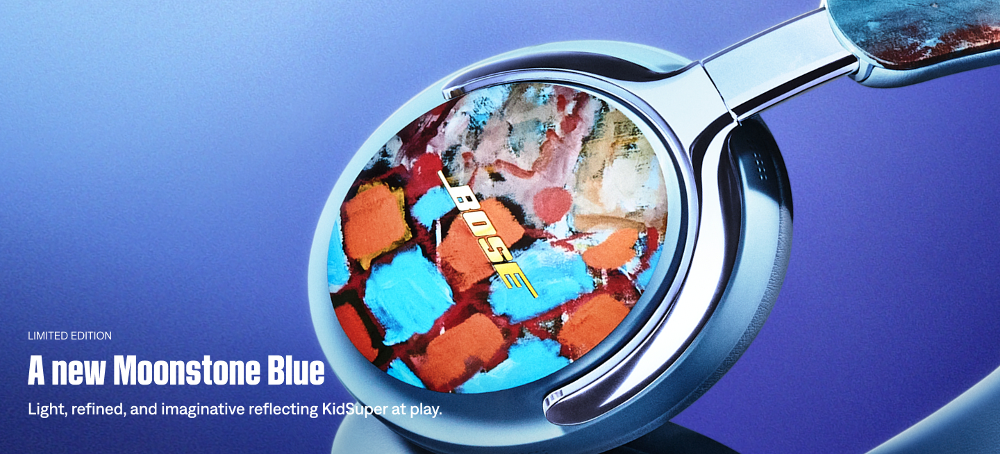
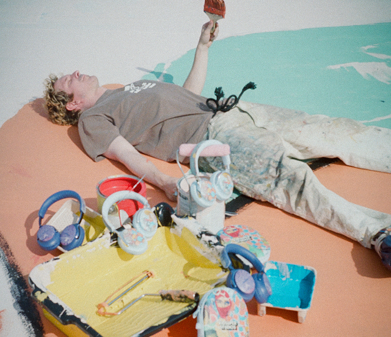
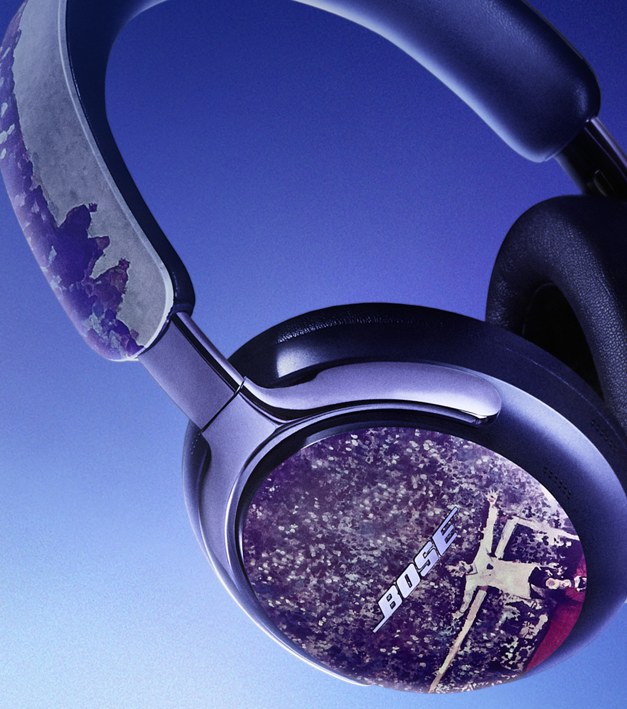

Make the collection discoverable
Work within listing-page heroes, category navigation, and product-card structures to make KidSuper products identifiable without disrupting the standard shopping experience.
Professional work · Product design & web authoring · 2026
Helping customers discover, explore, and evaluate limited-edition QuietComfort Ultra Headphones through responsive e-commerce experiences.
View live product pageBose partnered with KidSuper on limited-edition QuietComfort Ultra Headphones (2nd Gen), bringing visual expression from fashion, art, and soccer into a premium audio product. The collaboration spanned campaign storytelling and key shopping touchpoints.
As a UX Designer / Web Content Author, my work centered on the product listing pages (PLPs) and product detail pages (PDPs): shaping how the collaboration would appear inside Bose’s existing commerce patterns, supporting Figma layout refinements, configuring components in Contentstack, and reviewing responsive implementation with the team.
Business opportunity. Move beyond collaboration awareness to meaningful product exploration: help shoppers find the limited-edition headphones, understand what makes them distinct, and progress toward a purchasing decision during a time-sensitive promotional activation.
UX challenge. Incorporate expressive KidSuper artwork and editorial content into existing PLP and PDP templates without obscuring the product information and commerce controls customers rely on.
How might we turn curiosity around a limited-edition collaboration into confident product consideration within an established e-commerce design system?
The larger campaign included homepage placements, navigation, and a storytelling landing page. My primary case-study focus is the shopping experience—where awareness becomes product consideration.
Work within listing-page heroes, category navigation, and product-card structures to make KidSuper products identifiable without disrupting the standard shopping experience.
Balance artwork, campaign context, product benefits, variants, and purchasing information so customers can assess the product without losing their place in the transaction flow.
The commerce flow had to support different intents: customers who arrived ready to shop and those still learning why the collaboration mattered.
This is an illustrative journey model based on the Figma planning materials, not a measured user flow. Some shoppers could navigate directly to a PDP.
Figma included early desktop and mobile wireframes for the New & Exclusive and All Headphones PLPs, alongside PDP explorations for the custom QuietComfort Ultra variants. These artifacts made it possible to evaluate content hierarchy before implementing the experience within the CMS.
Keep collaboration imagery prominent without pushing product discovery and category browsing out of the experience.
Preserve core product information and purchase actions while introducing the custom artwork and collaboration narrative.
Review cropping, hierarchy, and content stacking across desktop and mobile designs.
Bose's Contentstack setup used predefined hero modules, layout combinations, and product-card patterns. The challenge wasn't inventing an entirely new commerce interface—it was identifying which existing structures could support this collaboration's artwork and messaging without compromising shopping conventions.
Keep copy legible against high-impact imagery while maintaining the component's supported text placements.
Ensure promotional modules complement rather than compete with product cards and browsing controls.
Account for mobile crop and stacking behavior before making page-level configuration decisions.
The PLP's editorial card was an opportunity to introduce the KidSuper collaboration directly in the shopping grid. Rather than creating a custom module, we worked within a predefined component with fixed content regions and a clear CTA hierarchy.
The editorial card had to occupy its assigned place in the product grid. The inner content container provided the safe area for campaign copy and prevented the promotional treatment from disrupting adjacent product cards.
The eyebrow needed to stay short enough to read as a label, while the headline had to fit its allotted lines without overwhelming the image. We reviewed length, line breaks, and hierarchy against the component's available space.
Headline, subtitle, and CTA were grouped toward the lower portion of the card. That placement constrained copy length and required the message to remain understandable at a glance, even as the viewport changed.
Campaign imagery needed a clear text-safe region. Busy focal points, high contrast, or important product details behind the copy could reduce legibility, so crop and focal-point choices mattered as much as the image itself.
The Explore action needed to stay easy to locate while still feeling part of the shopping grid. The card's role was to move interested visitors into deeper product exploration, not replace the standard PLP controls.

The design tradeoff: Make KidSuper's campaign visually distinctive while preserving readable copy, predictable component behavior, and a clear path from PLP to PDP.
My work sat between UX design and web authoring. I helped review proposed PLP/PDP arrangements, recommend adjustments that were feasible within available components, configure campaign content in Contentstack, and check the layouts at desktop and mobile breakpoints.
Working with an established team meant treating design feasibility, commerce requirements, and production accuracy as part of the same UX process—not separate handoffs.
The final campaign imagery illustrates the KidSuper visual direction incorporated into Bose’s established shopping experience. The product detail page remains accessible as an example of the live commerce work.



The most useful indicators of this work are how many shoppers reached the product experience and how many continued through the shopping journey. The four measures below focus on the PLP and PDP touchpoints rather than overall campaign sales.
These metrics help evaluate four stages: product reach, movement from browsing into detail, shopping intent, and completed conversion. Comparative metrics from similar Bose headphone pages would provide stronger context if available.
KidSuper reinforced that e-commerce design has to do two things at once: create space for a distinctive brand story and preserve the familiar information architecture customers depend on to make decisions.
Working across Figma and Contentstack strengthened my ability to evaluate a concept against production constraints, collaborate across disciplines, and translate a creative campaign into the practical realities of product discovery.